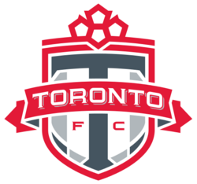
CONCACAF - Confederação de Futebol de Associação da América do Norte, Central e Caribe
A CONCACAF é o órgão que governa o futebol continental na América do Norte, América Central e o Caribe. Três entidades da América do Sul, as nações independentes da Guiana e Suriname, e a Guiana Francesa, também são membros.
.
Zona norte-americana (NAFU) - 3
Associação Canadense de Futebol (ACF)
Clubes do Canadá:

CF Montréal
Informações do clubeVancouver Whitecaps FC
Informações do clubeForge FC
Informações do clubeAtlético Ottawa
Informações do clube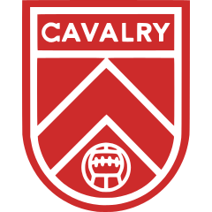
Cavalry FC
Informações do clubeHFX Wanderers FC
Informações do clube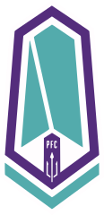
Pacific FC
Informações do clubeYork United FC
Informações do clube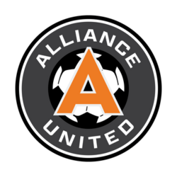
Alliance United
Informações do clube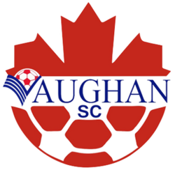
Vaughan Azzurri
Informações do clubeNorth Toronto Nitros
Informações do clube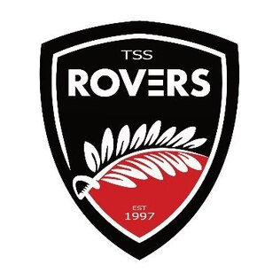
TSS FC Rovers
Informações do clube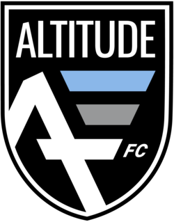
Altitude FC
Informações do clube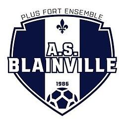
Blainville
Informações do clube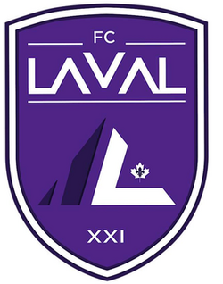
FC Laval
Informações do clubeGuelph United
Informações do clube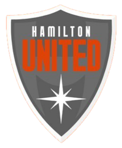
Hamilton United
Informações do clubeScrosoppi FC
Informações do clubeSimcoe County Rovers
Informações do clubeWaterloo United
Informações do clube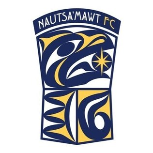
Nautsa’mawt
Informações do clube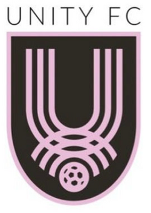
Unity FC
Informações do clube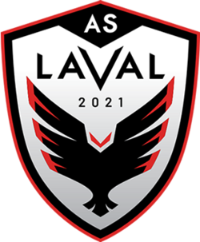
AS Laval
Informações do clube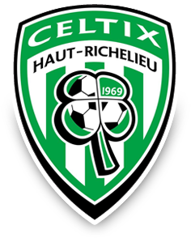
Celtix du Haut-Richelieu
Informações do clubeLongueuil
Informações do clube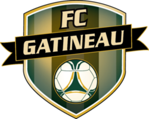
FC Gatineau
Informações do clube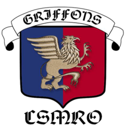
Mont-Royal Outremont
Informações do clubeClubes dos Estados Unidos:

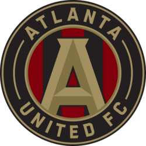
Atlanta United
Informações do clube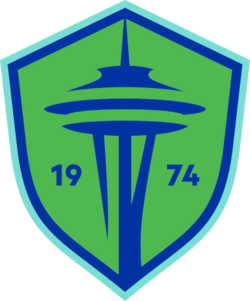
Seattle Sounders
Informações do clube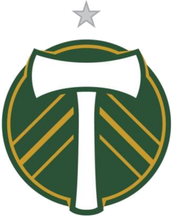
Portland Timbers
Informações do clube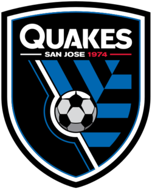
San Jose Earthquakes
Informações do clubeLA Galaxy
Informações do clubeLos Angeles FC
Informações do clubeNashville SC
Informações do clube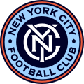
New York City FC
Informações do clubeInter Miami
Informações do clubeBirmingham Legion
Informações do clube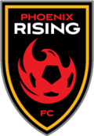
Phoenix Rising
Informações do clubeArizona
Informações do clube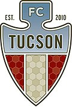
Tucson
Informações do clubeSporting Arizona
Informações do clube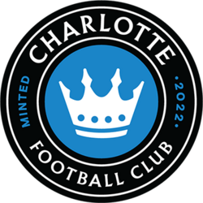
Charlotte
Informações do clube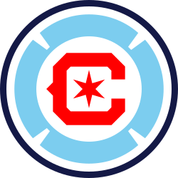
Chicago Fire
Informações do clube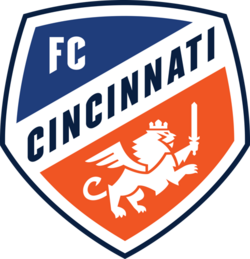
Cincinnati
Informações do clubeColumbus Crew
Informações do clube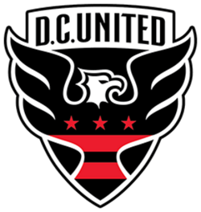
D.C. United
Informações do clubeNew England Revolution
Informações do clube
New York Red Bulls
Informações do clube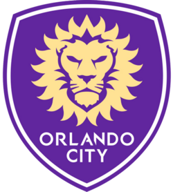
Orlando City
Informações do clubePhiladelphia Union
Informações do clubeAustin FC
Informações do clubeColorado Rapids
Informações do clube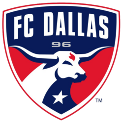
FC Dallas
Informações do clube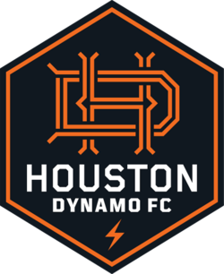
Houston Dynamo
Informações do clube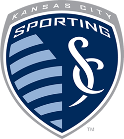
Sporting Kansas City
Informações do clube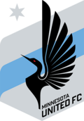
Minnesota United
Informações do clube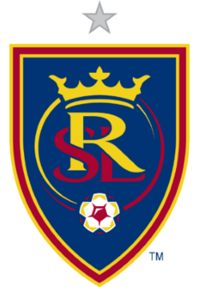
Real Salt Lake
Informações do clube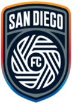
San Diego
Informações do clube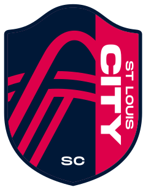
St. Louis City
Informações do clubeClubes do México:

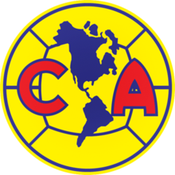
Club América
Informações do clubeMonterrey
Informações do clube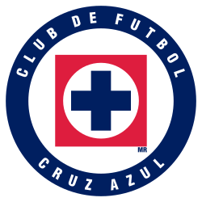
Cruz Azul
Informações do clubeToluca
Informações do clubeTigres UANL
Informações do clube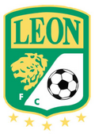
Club León
Informações do clubePumas
Informações do clubePachuca
Informações do clube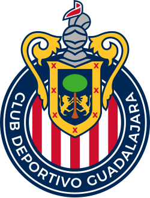
Guadalajara
Informações do clubeClub Tijuana
Informações do clubeSantos Laguna
Informações do clubeAtlas
Informações do clube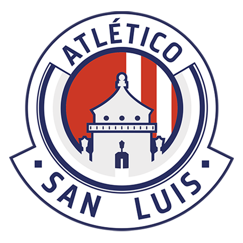
Atlético San Luis
Informações do clubeNecaxa
Informações do clube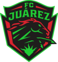
FC Juárez
Informações do clube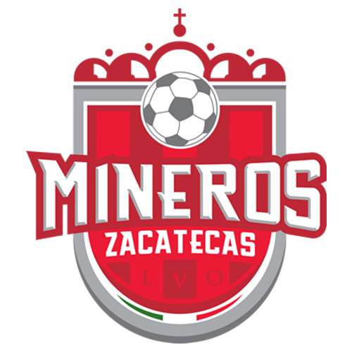
Mineros de Zacatecas
Informações do clubeClub Puebla
Informações do clube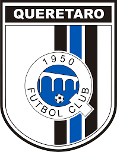
Querétaro FC
Informações do clube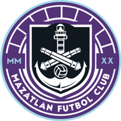
Mazatlán FC
Informações do clube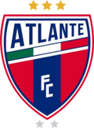
Atlante
Informações do clubeCelaya FC
Informações do clubeLeones Negros de la UdeG
Informações do clube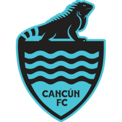
Cancún FC
Informações do clubeCorrecaminos UAT
Informações do clube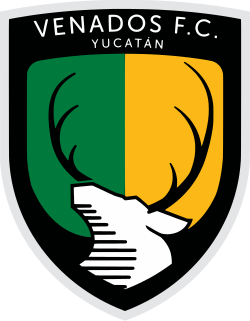
Venados FC
Informações do clubeDorados de Sinaloa
Informações do clubeJaiba Brava
Informações do clube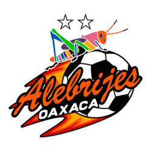
Alebrijes de Oaxaca
Informações do clubeAtlético Morelia
Informações do clubeIrapuato
Informações do clubeCimarrones de Sonora
Informações do clubeTlaxcala
Informações do clubeAtlético La Paz
Informações do clubeTepatitlán FC
Informações do clubeLa Piedad
Informações do clubeAlacranes de Durango
Informações do clubePioneros de Cancún
Informações do clubeGavilanes FC
Informações do clubeTritones Vallarta MFC
Informações do clubeInter Playa del Carmen
Informações do clubeCD Tapatío
Informações do clubeTecos FC
Informações do clubeColima FC
Informações do clubeMineros de Fresnillo
Informações do clubeMontañeses FC
Informações do clubeToros Neza FC
Informações do clubeTuzos de la UA de Zacatecas
Informações do clubeUniversidad Autónoma de Zacatecas
Informações do clube
.
Zona centro-americana (UNCAF) - 7
Federação de Futebol de Belize (FFB)
Clubes de Belize:
Verdes FC
Informações do clubeAltitude FC
Informações do clubeSan Pedro Pirates
Informações do clubeBelmopan Bandits
Informações do clube
Clubes da Costa Rica:
Alajuelense
Informações do clubeDeportivo Saprissa
Informações do clubeHerediano
Informações do clubeCartaginés
Informações do clubeMunicipal Liberia
Informações do clubePérez Zeledón
Informações do clubeSporting FC
Informações do clubePuntarenas FC
Informações do clubeSantos de Guápiles
Informações do clubeSan Carlos
Informações do clubeUniversidad de Costa Rica
Informações do clubeAD Carmelita
Informações do clubeMunicipal Grecia
Informações do clubeGuadalupe FC
Informações do clubeAD Guanacasteca
Informações do clubeUruguay de Coronado
Informações do clubeADR Jicaral
Informações do clubeBarrio México
Informações do clubeSanta Ana FC
Informações do clubeEscorpiones de Belén FC
Informações do clubeFC Moravia FCM
Informações do clubeFederação Salvadorenha de Futebol (FSF)
Clubes de El Salvador:

Águila
Informações do clubeFAS
Informações do clubeAlianza FC
Informações do clubeIsidro Metapán
Informações do clubeLA Firpo
Informações do clubePlatense-SLV
Informações do clubeDragón
Informações do clubeAtlético Marte
Informações do clubeMunicipal Limeño
Informações do clubeSonsonate
Informações do clubeOnce Municipal
Informações do clubeUniversidad de El Salvador
Informações do clubeZacatecoluca FC
Informações do clubeFuerte San Francisco
Informações do clubeHércules
Informações do clubeCD Cacahuatique
Informações do clubeInter FA
Informações do clubeJuventud Independiente
Informações do clubeTitán
Informações do clubeFederação Nacional de Futebol da Guatemala (FEDEFUTGUATE)
Clubes da Guatemala:
Agua Blanca
Informações do clubeAguacatán
Informações do clubeAmérica Chimaltenango
Informações do clubeAntigua GFC
Informações do clubeAurora
Informações do clubeCapitalinos
Informações do clubeCatarina
Informações do clubeAchuapa
Informações do clubeSuchitepéquez
Informações do clubeXinabajul
Informações do clubePuerto San José
Informações do clubeChichicasteco
Informações do clubeChimaltenango
Informações do clubeChiquimulilla
Informações do clubeCobán Imperial
Informações do clubeCoatepeque
Informações do clubeComunicaciones
Informações do clubeCuilapa
Informações do clubeDeportivo Barberena
Informações do clubeDeportivo Carchá
Informações do clubeDeportivo Chiantla
Informações do clube
Deportivo Coatepeque
Informações do clube
Deportivo Democracia
Informações do clube
Deportivo Gomerano
Informações do clube
Deportivo Guastatoya
Informações do clube
Deportivo Iztapa
Informações do clube
Deportivo Jalapa
Informações do clube
Deportivo Malacateco
Informações do clube
Deportivo Marquense
Informações do clube
Deportivo Mictlán
Informações do clube
Deportivo Mixco
Informações do clube
Deportivo Nueva Concepción
Informações do clube
Deportivo Petapa
Informações do clube
Deportivo Quiché
Informações do clube
Deportivo Reu
Informações do clube
Deportivo Sacachispas
Informações do clube
Deportivo San Pedro
Informações do clube
Deportivo Sanarate
Informações do clube
Deportivo Siquinalá
Informações do clube
Deportivo Zacapa
Informações do clube
El Progreso
Informações do clube
Fraijanes
Informações do clube
Gualán
Informações do clube
Halcones FC
Informações do clube
Heredia
Informações do clube
Huehuetecos
Informações do clube
Ipala
Informações do clube
Iztapa
Informações do clube
Juventud Copalera
Informações do clube
Juventud Escuintleca
Informações do clube
Juventud Independiente
Informações do clube
Juventud Pinulteca
Informações do clube
Juventud Retalteca
Informações do clube
La Democracia
Informações do clube
La Libertad Huehuetenango
Informações do clube
Marquense
Informações do clubeMunicipal
Informações do clube
Naranjeros Escuintla
Informações do clube
Nueva Santa Rosa
Informações do clube
Pajapita
Informações do clube
Plataneros
Informações do clube
Retalhuleu
Informações do clube
San Benito
Informações do clube
San Juan La Laguna
Informações do clube
San Pedro
Informações do clube
San Pedro la Laguna
Informações do clube
Santa Lucía Cotzumalguapa
Informações do clube
Sansare
Informações do clube
Sayaxché
Informações do clube
Sololá
Informações do clube
Tipografía Nacional
Informações do clube
Universidad San Carlos
Informações do clube
USAC
Informações do clube
Xelajú MC
Informações do clubeFederação Nacional Autônoma de Futebol de Honduras (FENAFUTH)
Clubes de Honduras:
Federação Nicaraguense de Futebol (FENIFUT)
Clubes da Nicarágua:
Federação Panamenha de Futebol (FEPAFUT)
Clubes do Panamá:
.
Zona caribenha (CFU) - 31
Associação de Futebol de Anguila (AFA)
Clubes da Anguila:
Associação de Futebol de Antígua e Barbuda (ABFA)
Clubes da Antígua e Barbuda:
Federação de Futebol de Aruba (FFA)
Clubes do Aruba:
Associação de Futebol das Bahamas (AFB)
Clubes da Bahamas:
Associação de Futebol de Barbados (AFB)
Clubes do Barbados:
Associação de Futebol de Bermudas (AFB)
Clubes de Bermudas:
Federação de Futebol de Bonaire (FFB)
Clubes do Bonaire:
Associação de Futebol de Cuba (AFC)
Clubes de Cuba:
Federação de Futebol de Curaçau (FCF)
Clubes do Curaçau:
Associação de Futebol da Dominica (AFD)
Clubes da Dominica:
Associação de Futebol de Granada (AFG)
Clubes da Granada:
Liga Guadalupense de Futebol (LGF)
Clubes de Guadalupe:
Federação de Futebol da Guiana (FFG)
Clubes da Guiana:
Liga de Futebol da Guiana Francesa (LFG)
Clubes da Guiana Francesa:
Federação Haitiana de Futebol (FHF)
Clubes do Haiti:
Associação de Futebol das Ilhas Caiman (CIFA)
Clubes das Ilhas Caimã
Federação de Futebol das Ilhas Virgens Americanas (USVISA)
Clubes das Ilhas Virgens Americanas:
Associação de Futebol das Ilhas Virgens Britânicas (BVIFA)
Clubes das Ilhas Virgens Britânicas:
Federação de Futebol da Jamaica (JFF)
Clubes da Jamaica:
Liga de Futebol de Martinica (LFM)
Clubes da Martinica:
Associação Monserratense de Futebol (MFA)
Clubes de Monserrate:

Federação Porto-Riquenha de Futebol (FPF)
Clubes de Porto Rico:
Federação Dominicana de Futebol (FDF)
Clubes da República Dominicana:
Associação de Futebol de Santa Lúcia (SLFA)
Clubes de Santa Lúcia:
Associação de Futebol de São Cristóvão e Neves (SKNFA)
Clubes do São Cristóvão e Neves:
Comitê de Futebol de São Martinho Francês (CFSMF)
Clubes do São Martinho Francês:
Associação de Futebol de São Martinho Neerlandês (AFSMN)
Clubes do São Martinho Neerlandês:
Federação de Futebol de São Vicente e Granadinas (SVGFF)
Clubes de São Vicente e Granadinas: